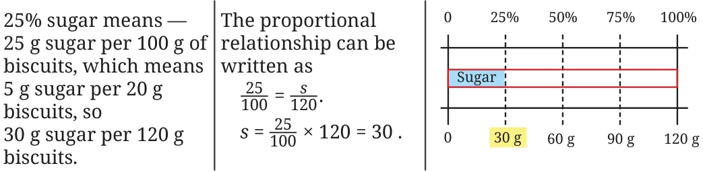
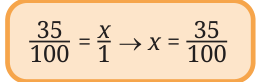
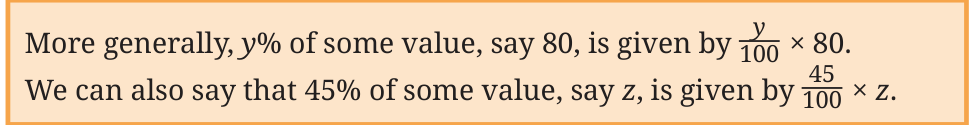

Example 1: Madhu and Madhav each ate biscuits of a different variety. Madhu’s biscuits had 25% sugar, while Madhav’s had 35% sugar. Can you tell who ate more sugar?
As we just saw, percentages represent fractional quantities or proportions. It would be inappropriate to compare just the percentages when they are referring to different quantities or wholes. That is, if they both had 100 g of biscuits, then clearly Madhav ate more sugar — 35 g (35% of 100 g is 35 g per 100 g) vs. Madhu’s 25 g (25% of 100 g is 25 g per 100 g).
Suppose Madhu ate 120 g of biscuits and Madhav ate 95 g of biscuits. Who consumed more sugar? Try to find out.
We know that the weight of sugar is proportional to the weight of the biscuits consumed. Madhu ate 120 g of biscuits having 25% sugar. The amount of sugar he ate is the value in the blank —
$$25 : 100 :: \underline{\qquad} : 120.$$
A few ways of going forward are shown.

Do any of the methods match your thinking? Were you able to understand all the methods?
Now, let us find out how much sugar Madhav ate. He ate 95 g of biscuits with 35% sugar. Sometimes the numbers may not be convenient to calculate using different methods as we did just before.
100 g of the biscuits he ate has 35 g of sugar.
This means, 1 g of the biscuits has \(\frac{35}{100}\) g of sugar.
We can say that 95 g of the biscuit will have \(\frac{35}{100} \times 95 = 33.25\) g.

This can also be solved by finding the value of \(s\) in the proportional relationship \(\frac{35}{100} = \frac{s}{95}\).
Therefore, Madhav ate more sugar.

